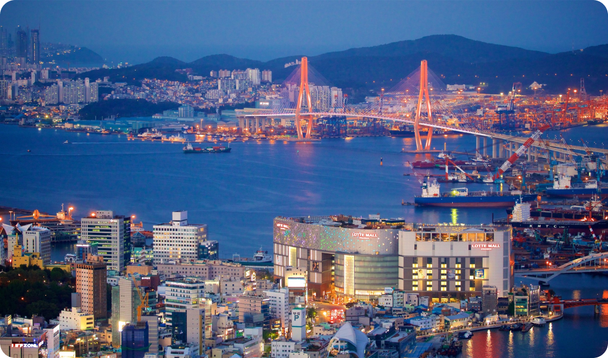

SUA PRÓXIMA VIAGEM:
Conheça Busan

Busan, a estrela em ascensão da Coreia do Sul, oferece de tudo, desde churrascarias de primeira linha
até tradicionais barracas de comida de rua. Aqui,
exploramos a segunda cidade da Coreia do Sul e descobrimos as suas ofertas culinárias.
PARA OS AMANTES DE HISTÓRIA:
Descubra os 3 destinos imperdíveis em Busan
As atrações de Busan vão desde templos budistas centenários que pontilham as montanhas e o litoral da cidade até praias imaculadas com águas
cristalinas. Esta cidade litorânea tem muitas coisas para fazer o ano todo - as famílias podem passar o tempo em um aquário à beira-mar, os
compradores podem explorar bairros vibrantes e os amantes da natureza podem desfrutar de longas caminhadas até mirantes panorâmicos.
Os santuários budistas que pontilham a costa e as montanhas de Busan têm uma arquitetura impressionante que irá encantar os fotógrafos.
1. Templo Haedong Yonggungsa
O Templo Haedong Yonggungsa é um templo budista localizado no extremo nordeste de Busan. Construído em 1376, é um dos poucos templos
na
Coreia construídos à beira-mar - você pode desfrutar de vistas do Mar do Leste de um lado e de belas montanhas do outro.
Bom para:
- História

2. Templo Beomeo-sa
O Templo Beomeo-sa é um dos maiores santuários da Coreia do Sul. Ele está localizado no alto da borda leste da montanha Geumjeongsa
e fica
distante da agitação da cidade. O Daeungjeon Hall do templo é um exemplo bem preservado da arquitetura da Dinastia Joseon.
Bom para:
- História

3. Parque Yongdusan
O Parque Yongdusan, localizado no centro de Busan, abriga alguns dos monumentos mais importantes da cidade. Você pode ver vistas
espetaculares
do topo da Torre Busan, de 120 metros de altura. O parque tem 2 museus - confira os instrumentos musicais
tradicionais no Museum of World Folk
Instruments e mais de 80 veleiros coreanos no Exhibition Hall of World Model Boats.
Bom para:
- Casais
- Famílias
- Orçamento
As melhores coisas para fazer em Busan mostram a reputação da cidade como um importante porto marítimo na Ásia.
Frequentemente vista como a
essência da Coreia do Sul, você experimentará uma atmosfera única em termos de diversidade étnica
e cultural, já que a cidade recebe um público
cosmopolita o ano todo.